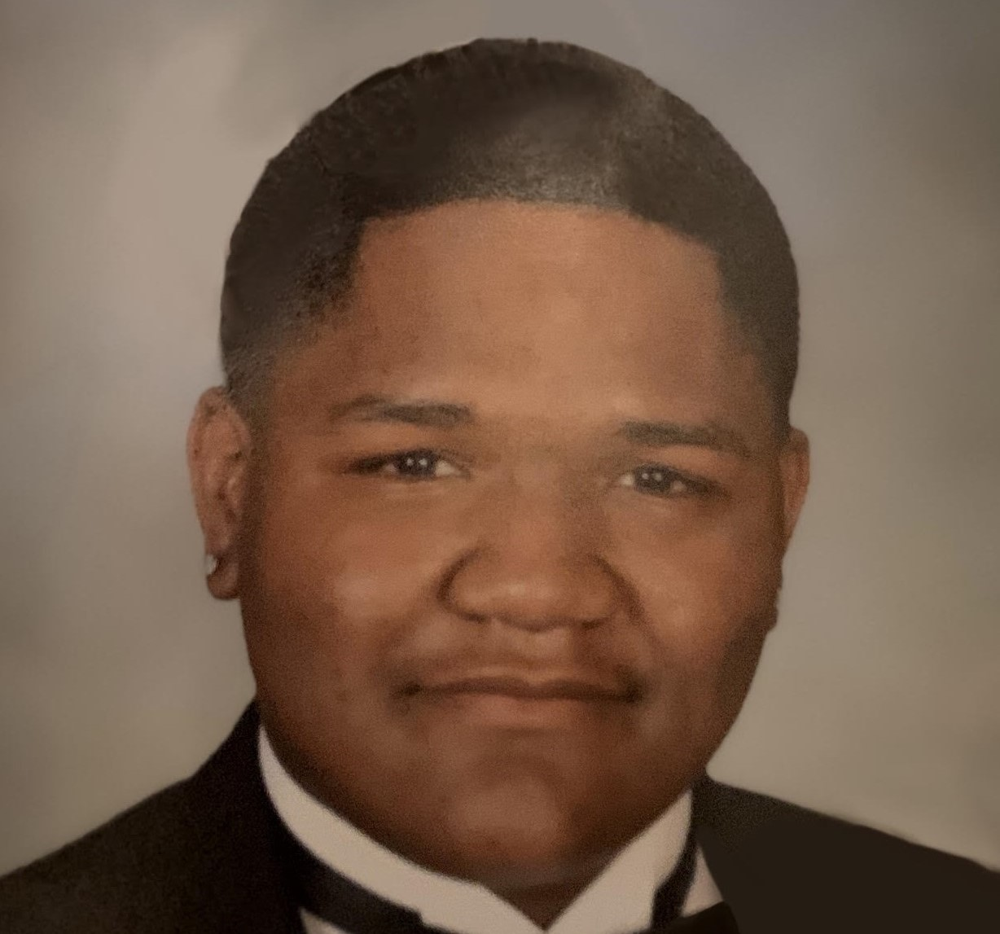
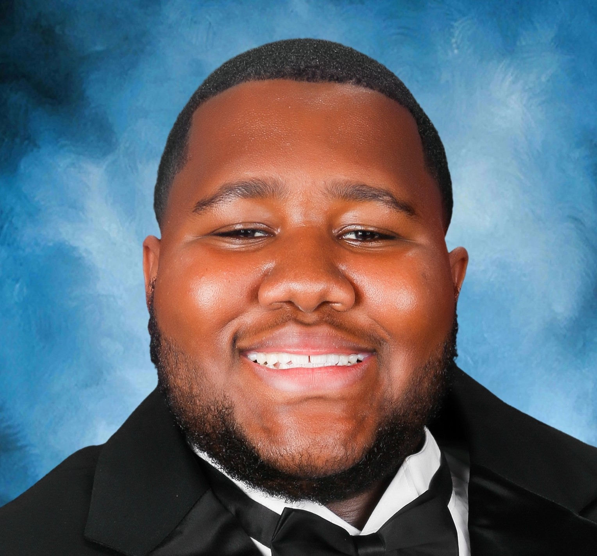

Elijah Alston Jr
Contact: Elijah1.@famu.edu
The story of Elijah starts at his home in Port st Lucie, where he was born on February twenty-fifth, two thousand three and raised to the quaint age of nineteen, where he now stays in Tallahassee. He attends Florida Agricultural and Mechanical University and is getting his bachelor's in Computer Information Tech. More about Elijah is that he is the middle child with two sisters, the oldest named Elicia and the youngest named Eliana. His full name may be Elijah Alston Jr, but it's not that original, being named after his father. His mother's name is Ronetta, but that's all about the family for now. Let's talk about some of his achievements. He graduated from elementary, middle, and high school, and he is on his way to graduating college.
Elijah enjoys many things, from drawing, playing games, and even cooking. Elijah enjoys cooking most of all. He feels that's a connection to his grandma, who taught him how to cook at a very young age starting at five. But ultimately, he thinks as if cooking has become a safe space for him when he needs time alone to think. A fun fact about Elijah is that he is a Notary Public and has been for over a year. Elijah also wants to start his very own company that will help people start a business. He believes this will; help people not be so afraid of starting a business.
Lastly, Elijah loves his family and friends; he enjoys their company and the memories he shares with them but now starts a new point in his life where he must overcome all obstacles, even if they may be forgetting about his family, to follow his dreams. All he knows now is that he must focus so he can pass all his classes to get into grad school. Elijah's life is eventful and full of enjoyment but where he goes next is up in the air.
Darian Conner
Contact: Darian1.@famu.edu
My name is Darian Conner. I am a 3rd-year Transfer student from Jacksonville, Fl. I was born here in Tallahassee, and I was raised in Jacksonville. I went to school at Jean Ribault High School, Home of the Fighting Trojans. I also came from a family that also went to Ribault. While I was in high school, I played two sports, Football and track and field.
Also, when I was in high school, I thought that my major would be Mechanical Engineer because when I took my math EOC in middle school, my math teacher told me that I would make a good Engineering major because I was very good with numbers and graphs. So, I decided to take that route until I got into my first semester in college. The reason why I say this is because I had to take chemistry, and I failed it because I could not follow what was going on, and that is how I ended up in Information Technology. The reason why I decided to switch to Information Technology is that I want to get into the Cybersecurity field and learn more about technology. Also, in the future, I want to create my own video game on NCAA Football.
I first started playing Football when I was eight years old because I was playing in front of the tv every Saturday and Sunday football. The reason why I want to make this game is that this game was out from 2001 to 2014, then its creation of it was canceled. It’s very unclear as to why the game was canceled in the first because the game was selling across the country. Also, with me taking this web designing class, it shows me how web pages are made and coded.
Tosin Jolaogun

Contact: Tosin1.@famu.edu
My name is Tosin Jolaogun. I was born in Margate, Florida, but I grew up in Port St. Lucie, Florida, and graduated from Port St. Lucie High School in May 2021. I grew up with my mother, older brother, and younger sister. My hometown is on the southeast coast of Florida, about one hundred miles north of Miami and about two-and-a-half hours southeast of Orlando.
I became interested in musical instruments in middle school and joined the band in sixth grade. I played the flute and picked up the technique for it relatively quickly. After a year, I decided I wanted to shift my focus to sports and come back to music later, which I still plan to do after I get my degree. I ran track for my high school for two years in high school, played volleyball for one, and volunteered for game day preparation during every football season. I've worked the chain gang for every home game for about two years, worked the sideline for soccer and basketball games, and was the team manager for JV and varsity basketball my senior year
Before I start my career, I plan to travel to at least a couple of other countries and visit my home country, Nigeria, with my parents. I have many family members overseas, and I think building and maintaining meaningful relationships with them as I grow older is important. After college, I also plan to branch into analytics management or data science, preferably in sports. My time as a volunteer throughout high school has given me a greater appreciation for the work behind the scenes for sporting events. It is still something that I am passionate about and a field I would love to be a part of in the future.